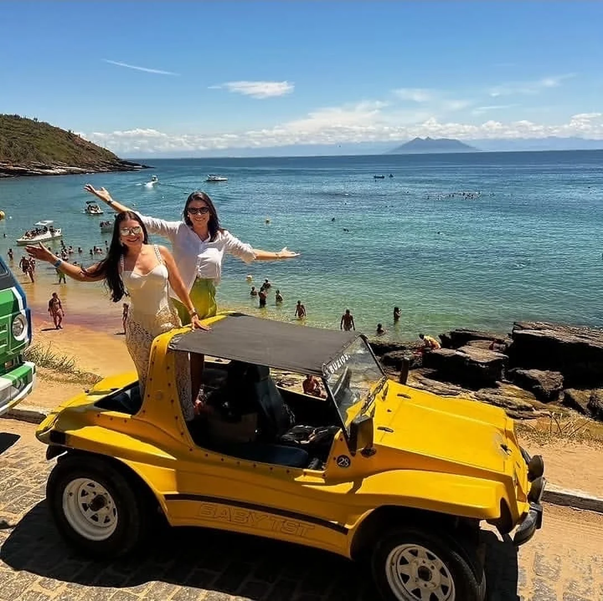
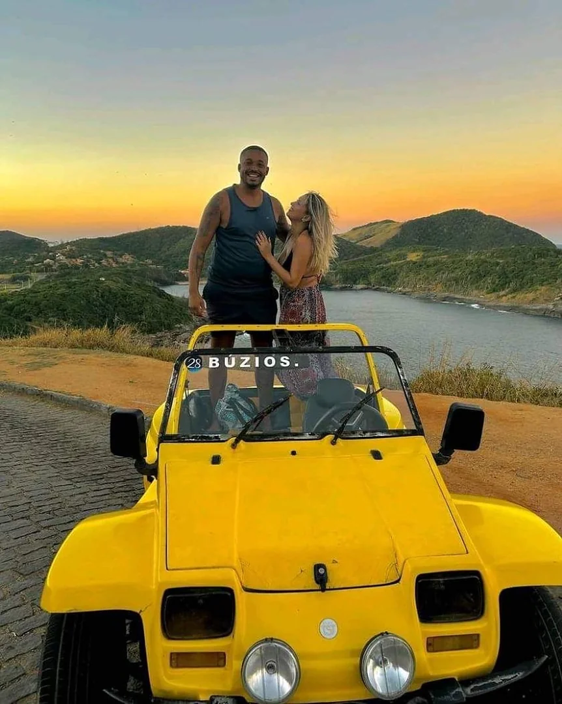
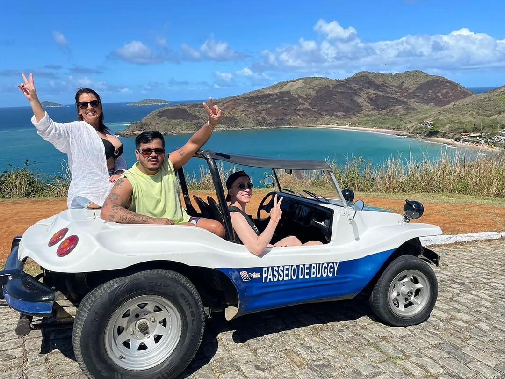
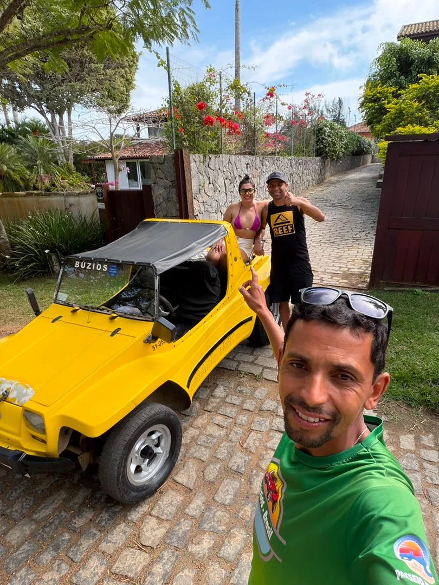
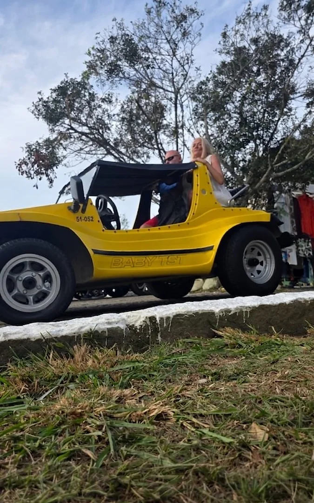

A roda das 8 praias
Uma volta, oito praias.
- 1Armação
- 2João Fernandes
- 3João Fernandinho
- 4Brava
- 5Forno
- 6Foca
- 7Ferradura
- 8Orla Bardot / Centro
e 3 mirantes pelo caminho ↓
3 mirantes, 3 paradas para fotos
Pare, desça e registre.
- João Fernandes1ª parada para fotos
Vista da península e do mar turquesa.
- Toa Toa2ª parada para fotos
Vista das enseadas e das ilhas.
- Praia Brava3ª parada para fotos
O mar aberto da Brava.









Fotos reais do passeio, do Google Maps e do Instagram @rvtour.passeio.buggy.
Escolha e chame no WhatsApp
Quem foi, recomenda
241 avaliações no Google Maps
Ler no Google →“Passeio inesquecível, vale cada centavo. Vista linda nos mirantes e paradas ótimas para tirar fotos!”
Avaliação no Google Maps ★★★★★
“O motorista Ricardo é um diferencial com certeza! Muito atencioso, explica cada praia e tira fotos incríveis.”
Avaliação no Google Maps ★★★★★
“Experiência incrível em Búzios, ótimo custo-benefício. Conhecemos as praias e mirantes num roteiro super completo.”
Avaliação no Google Maps ★★★★★
Manguinhos, Búzios
- EndereçoRua Celeste da Costa — Manguinhos, Armação dos Búzios - RJ · 28950-000
- AtendimentoSeg. a sáb., 8h às 21h30 · Dom., 8h às 15h
- WhatsApp(22) 99880-2581
- Instagram@rvtour.passeio.buggy
Por onde o passeio passa?
8 praias (Armação, João Fernandes, João Fernandinho, Brava, Forno, Foca, Ferradura e Orla Bardot/Centro), 3 mirantes (João Fernandes, Toa Toa e Brava) e 3 paradas para fotos.
Como reservo?
Monte o passeio no simulador e chame no WhatsApp (22) 99880-2581. Valores e horários, sob consulta.